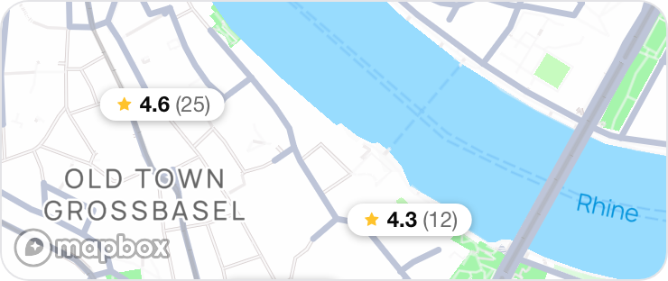

A, Current
B, Nunito
C, Poppins
D, Inter Tight, opened up
A, Current.
Inter Tight (display) + Inter (body), unchanged from production. SIL Open Font License 1.1. The baseline the other three are judged against.
All
Coiffeur
Barber
Nails
Spa
Inspo
Suchen
Top auf Solen
Cuts & Culture
4.8
Barbershop
4056 Basel
15 CHF
Haarsalon Margot
4.8
Coiffeur
4051 Basel
35 CHF
Atelier Haarwerk
4.6
Coiffeur
4001 Basel
35 CHF
Nail Studio Bliss
4.5
Nails
4051 Basel
15 CHF
In der Nähe

20 Stores in der Nähe
Muse Beauty Studio
4.2
Coiffeur
4001 Basel
35 CHF
Glow Lab Basel
4.5
Coiffeur
4051 Basel
35 CHF
Nail Studio Bliss
4.5
Nails
4051 Basel
15 CHF
Smooth Skin Studio
4.5
Spa & Wellness
4052 Basel
20 CHF